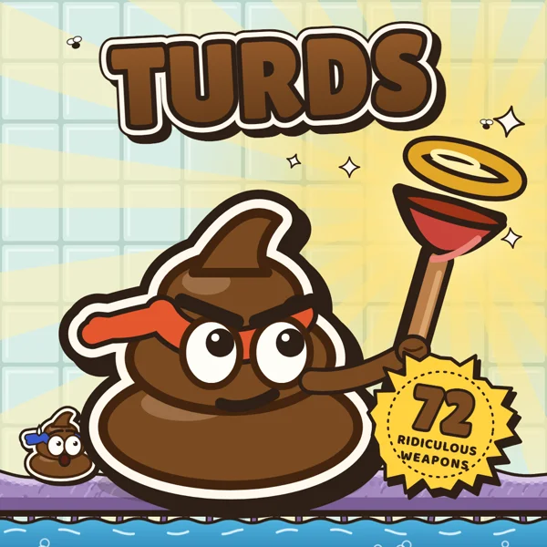

#01 / ARTILLERY / MULTIPLAYERTurds↗LESS WAIT.
MORE PLAY.
100%
GOOD
CHAOS.↗
GOOD
CHAOS.↗
Your browser.
Your next obsession.
Let’s make something happen.
CHANGE THE PERSPECTIVE.
PLAYER FAVORITES / 08 OCT 2026THE TOP
THE TOP
PICKS.
Five stars. Big energy.
The highest-rated games on StarHermit.
NO MORE “MAYBE LATER.”
LET’SPLAY. ↗